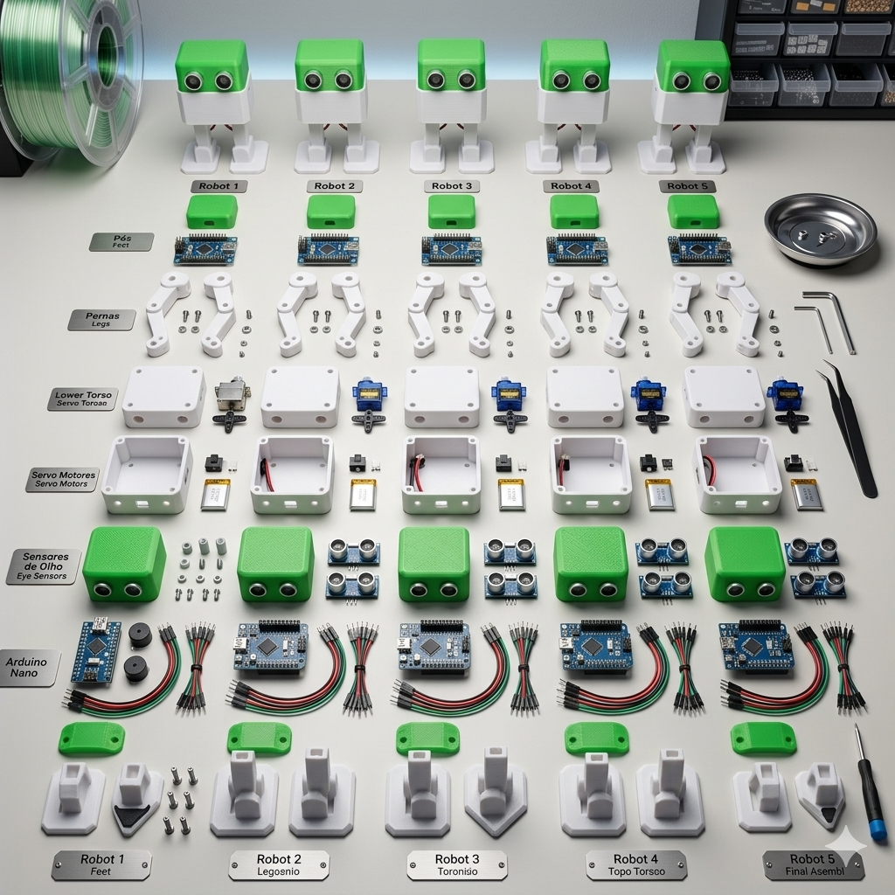
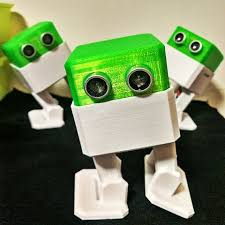
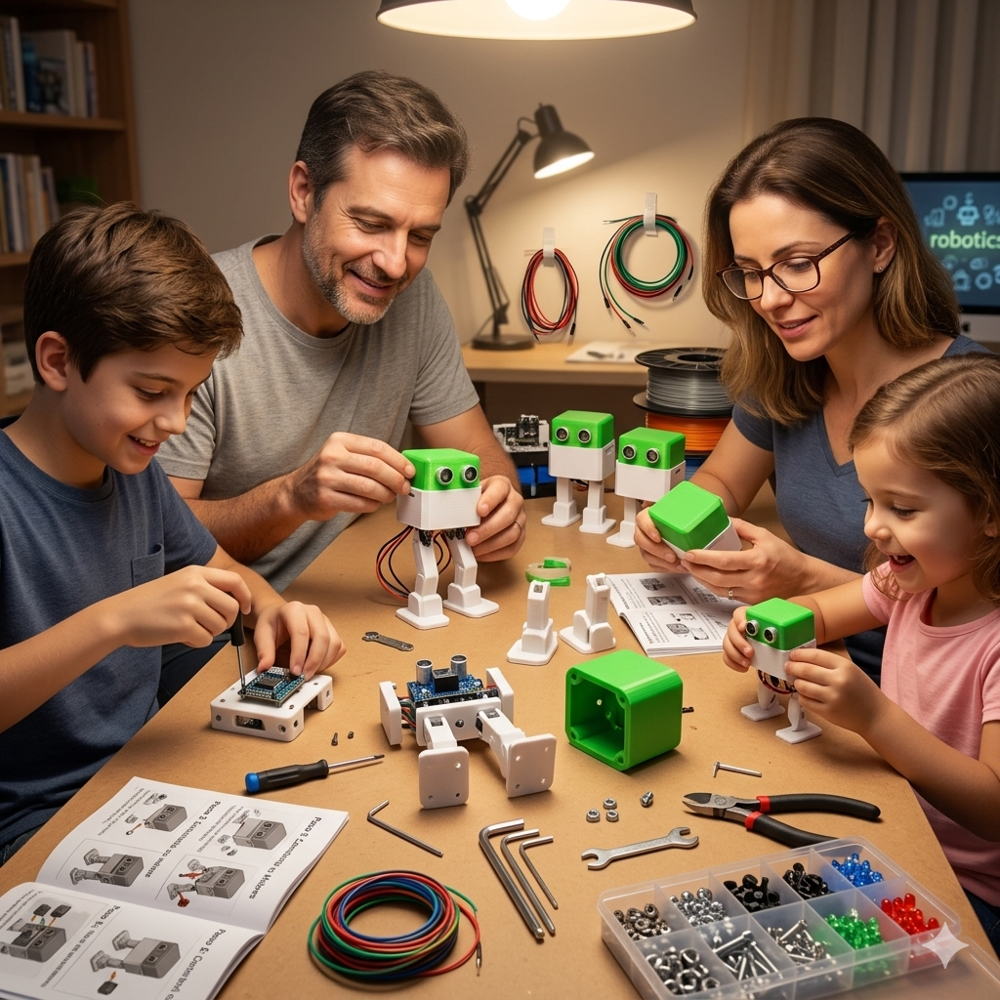
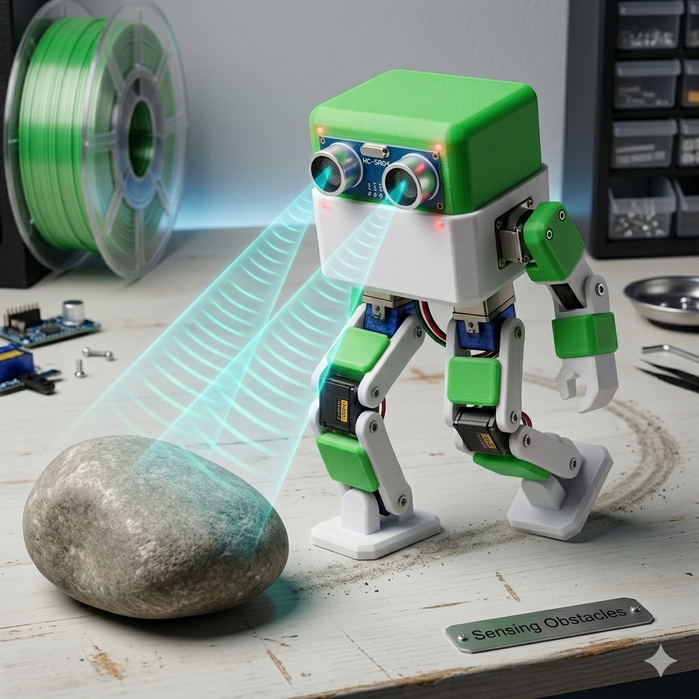
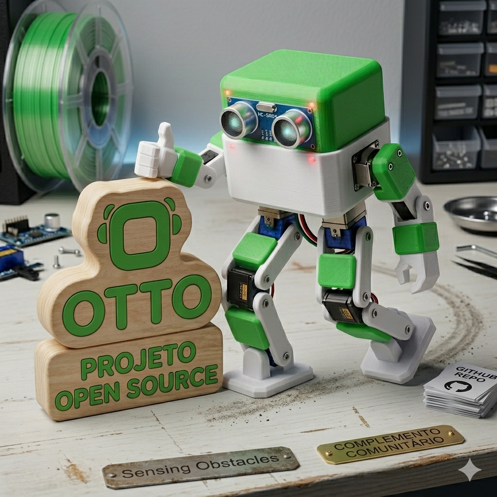

Kit Completo Otto
O Kit Completo Otto inclui todas as peças necessárias para montar seu robô interativo do zero, ideal para crianças e entusiastas de robótica.


O Kit Completo Otto inclui todas as peças necessárias para montar seu robô interativo do zero, ideal para crianças e entusiastas de robótica.

Otto é perfeito para projetos em família! Pais e filhos podem montar juntos e aprender sobre eletrônica, programação e robótica de forma divertida.

Veja o Otto pronto para usar! Após montado, o robô pode caminhar, dançar e interagir com sensores ultrassônicos que detectam obstáculos ao seu redor.

O projeto Otto é open source e está disponível para qualquer pessoa do mundo. Nossa missão é tornar a robótica acessível e divertida para todos os públicos.

| Componentes | Quantidade |
|---|---|
| Pés em PLA branco | 2 |
| Pernas em PLA branco | 2 |
| Corpo em PLA branco | 1 |
| Cabeça em PLA verde | 1 |
| Servomotores SG90 | 4 |
| Arduino Nano | 1 |
| Sensor Ultrassônico HC-SR04 | 1 |
| Buzzer passivo | 1 |